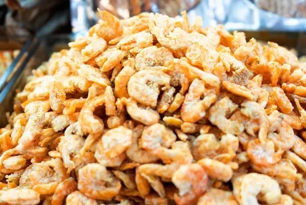
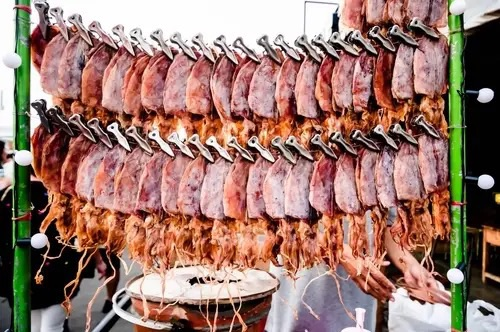
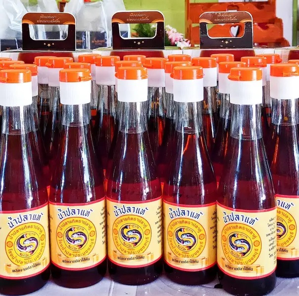
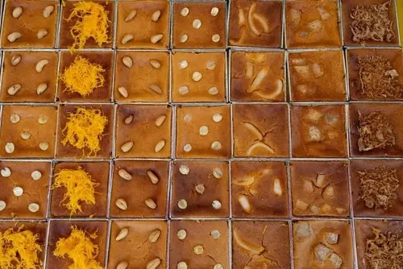

1. ข้าวหลามหนองมน

หอมมันกะทิ อัดแน่นในกระบอกไม้ไผ่รสชาติกลมกล่อมมีทั้งไส้ถั่วดำ เผือก งาดำ และอีกหลายรสชาติให้เลือกถ้าคุณเลือกซื้อของฝากชลบุรีเป็นข้าวหลามหนองมน
นอกจากจะได้รสชาติอร่อย มัน ๆ นัว ๆ แบบดั้งเดิมแล้ว ยังเป็นของที่สะท้อนเอกลักษณ์ท้องถิ่นของขนมของฝากหนองมนได้อย่างดี เหมาะสำหรับฝากครอบครัวหรือเพื่อน ๆ 2. กุ้งแห้งชลบุรี

กุ้งแห้งชลบุรีเป็นอีกหนึ่งของดีที่ไม่ควรพลาด ด้วยความสดใหม่จากทะเล รสชาติเค็ม ๆ แบบมีมิติจากธรรมชาติ เหมาะสำหรับนำไปทำอาหารทั้งต้ม ผัด แกง หรือทานคู่กับน้ำพริกก็อร่อยไม่แพ้กัน
กุ้งแห้งคุณภาพจากร้านดังในตลาดท้องถิ่นชลบุรีถือเป็นของฝากจากชลบุรีที่ได้รับความนิยมมานาน เพราะเก็บได้นานและสะดวกต่อการพกพา หากใครกำลังหาของฝากสำหรับผู้ใหญ่หรือคนที่ชอบทำอาหารทะเล
การซื้อของฝากอย่างอาหารทะเลแห้งที่ชลบุรีจะตอบโจทย์แน่นอน 3. ปลาหมึกแห้ง

ปลาหมึกแห้งนอกจากกุ้งแห้งแล้ว ปลาหมึกแห้งชลบุรีก็เป็นของฝากสุดฮอตที่คนไทยคุ้นเคย ปลาหมึกสดจากทะเลถูกนำมาตากแดดจนได้ความหอมเฉพาะตัว กินได้ทั้งแบบย่างหรือทอดกรอบ
หอมอร่อยและเก็บไว้ได้นาน เหมาะสำหรับซื้อไปฝากเพื่อนที่ชอบของกินเล่นเคี้ยวเพลิน ๆ หรือใช้ประกอบอาหารก็ได้เช่นกัน การซื้อของฝากชลบุรีอย่างปลาหมึกแห้งก็เหมือนเอาทะเลกลับไปฝากเพื่อนเลยล่ะ 4. น้ำปลาแท้ชลบุรี

น้ำปลาชลบุรีขึ้นชื่อว่าเป็นหนึ่งในน้ำปลาที่มีรสชาติเข้มข้น หอม และมีรสชาติกลมกล่อม เหมาะสำหรับนำไปปรุงอาหารไทยทุกชนิด ไม่ว่าจะต้มยำ แกง หรือผัด เพียงหยดเดียวก็เพิ่มรสชาติให้อาหารอร่อยขึ้นหลายเท่า
จึงไม่แปลกที่หลายคนเลือกซื้อของฝากจากชลบุรีเป็นน้ำปลาแท้ติดไม้ติดมือกลับไป เพราะทั้งได้คุณภาพดี ราคาสมเหตุสมผล และเป็นของฝากที่ใช้ได้จริงในชีวิตประจำวัน 5. ขนมหม้อแกงชลบุรี

หนึ่งในขนมของฝากชลบุรีที่ห้ามพลาดเด็ดขาดก็คือ ขนมหม้อแกง กลิ่นหอม หวานมันกำลังดี เนื้อนุ่มละมุน มีหลายรสชาติ เช่น เผือก ถั่วทอง หรือฟักทอง ทำใหม่สด ๆ ทุกวันในร้านเบเกอรี่ท้องถิ่น ขนมหม้อแกงมักถูกบรรจุในกล่องสวยงาม
ทานง่าย และรสชาติถูกใจทุกวัยแน่นอน เพราะฉะนั้นอย่าลังเลที่จะซื้อของฝากชลบุรีชิ้นนี้